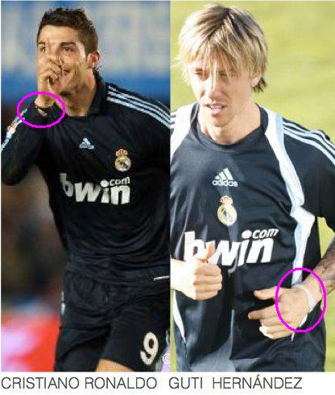

|
A Power Balance-t úgy tervezték, hogy az évszázadok óta ismert keleti gyógymódhoz hasonlóan, optimalizálja a test természetes energia áramlását. Ezáltal Ön saját magához képest a lehetõ legtöbbet hozhassa ki magából, amire a termék nélkül nem minden esetben lenne képes. A Power Balance mûködésének titka egy forradalmian új technológia, mely Mylar hologramokat használva pozitívan hat az emberi test természetes mágneses mezejére. Minden kézzelfogható dolog, így az emberi test is 7,8 Hz hullámhosszon rezonál, habár a mai modern világban számtalan káros hatás éri szervezetünket, többek között olyan elektromágneses sugárzást kibocsájtó berendezések, mint a televízió, számítógép, mobiltelefon stb. A Power Balance karkötõ képes az elektroszmog által megváltozott rezgésszámot kijavítani és ezzel hamornizálni az emberi test energiaáramlását. Az egyensúly azonnali javítása egy olyan tulajdonság, amely mindenki figyelmét felkelti a Power Balance karkötõ legelsõ felpróbálásánál. A jó stabilitás és egyensúly a siker alapjai bármely sport ûzésénél. Mindennapi emberek, de az élsportolók is igazolják hogy a Power Balance karkötõ viselésekor a testük hajlékonysága és flexibilitása javult. A harmonikusan áramló energia a testi erõnlét növekedésben is megnyilvánul. A szörfözõk, autóversenyzõk, kosárlabdázók sõt, újabban már színészek is megkedvelték ezt a kicsi, de erõs karkötõt. Viseli Giancarlo Fisichella olasz Forma 1 versenyzõ, Rubens Barrichello brazil pilóta, Alessandro Petacchi kerékpáros bajnok. Ezzel a karkötõvel a csuklóján jelent meg Joe Cada fotója a Sports Illustratedben, miután gyõzött a legutóbbi Poker World Series-n, ahonnan 8 millió dollárt vitt haza. A fotó körbejárta a világot. Power Balance karkötõt viselnek a futball, a baseball, a mountain bike sztárjai és olyan hollywoodi nagyok, mint például Robert De Niro. A szerkentyûben, úgy tûnik, sokan bíznak, mert már 3 millió példány talált gazdára világszerte. |
|
Mindenki, aki növelni szeretné a fizikai teljesítõképességét, stabilitását vagy flexibilitását, kipróbálhatja a Power Balance hatását. A felhasználók említik még az alvás javulását, az immunrendszer erõsödését, jobb stressz kezelést, a fájdalmas ízületek és izmok lazítását. Az idõsebb emberek a teljes életminõség javulását észlelték.  |